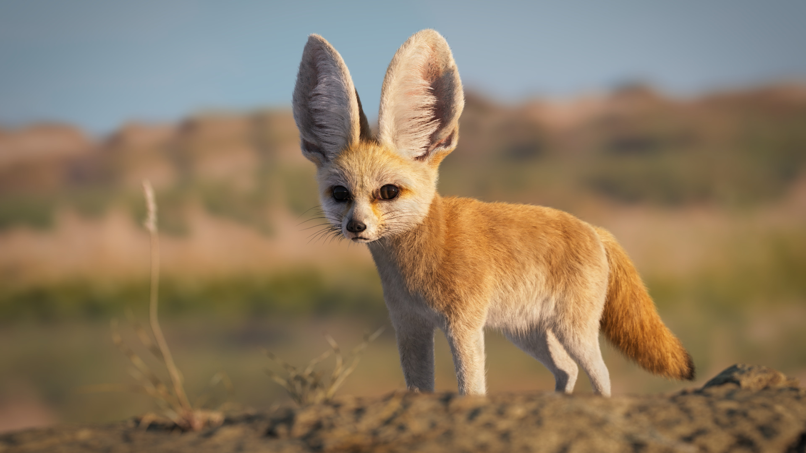

- history
- diet
- friends
The fennec fox (Vulpes zerda) is a small fox native to the deserts of North Africa, ranging from Western Sahara and Mauritania to the Sinai Peninsula. Its most distinctive feature is its unusually large ears, which serve to dissipate heat and listen for underground prey. The fennec is the smallest fox species. Its coat, ears, and kidney functions have adapted to the desert environment with high temperatures and little water.
